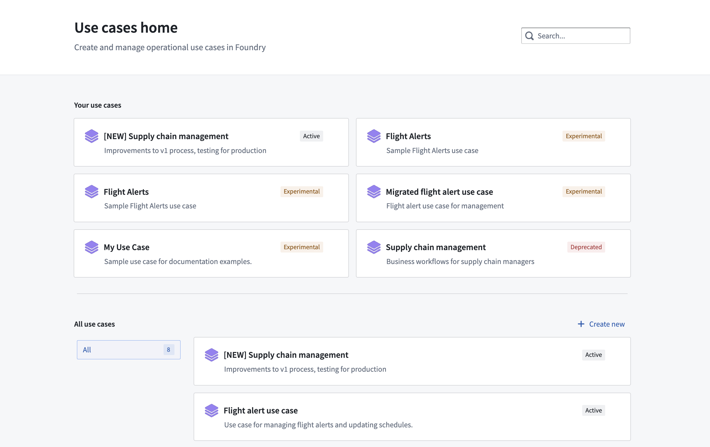
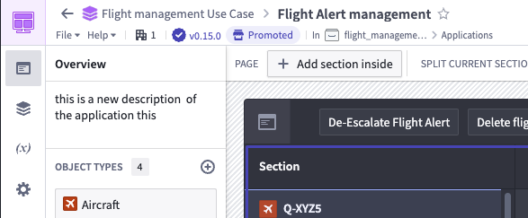
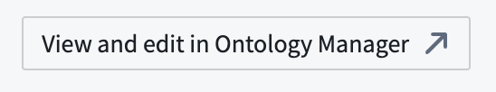
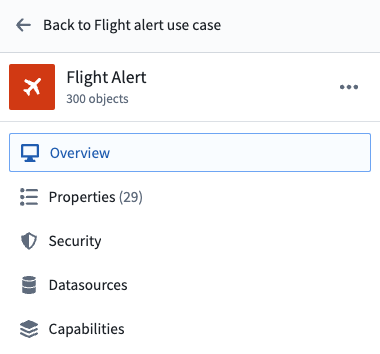
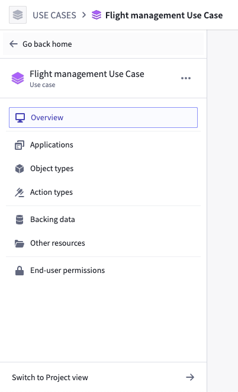
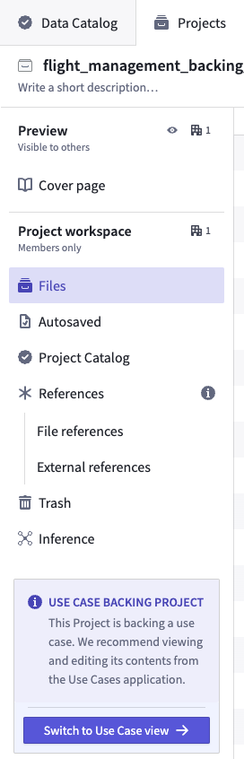

The Use Cases application includes a variety of navigational features and tools that enable a streamlined workflow across Foundry resources. We recommend familiarizing yourself with the various pages and elements within the Use Cases application before creating your first use case.
Get started navigating the Use Cases app by clicking the icon under Apps on the Foundry navigation sidebar. If the Use Cases application is not visible there, select View all to expand the application list.
The first view of the Use Cases application is a home page where you can see and search for all use cases, as well as create new ones.

Use the search bar in the upper-right corner of your screen to search for an existing use case, application, or Ontology resource.
In this section, you will find a list of your recent use cases. Use cases are tagged with Active, Experimental, or Deprecated statuses:
Learn more about use case metadata.
Select a use case to explore more details in the use case Overview page.
Part of the convenience in using the Use Cases app when managing resources is the ability to navigate back and forth between your use case and other Foundry applications. This is especially useful when you want to stay focused on a particular use case but need to update applications or edit Ontology components.
When opening a resource that is present in a use case, you will find a navigation breadcrumb header built into the interface. This allows you to easily return to your use case after viewing or modifying a resource. The navigation header appears as shown in the screenshot below:

In the example above, selecting the Flight Alert use case header will navigate you back to the overview page of that use case.
Use case application allows you to jump directly to the object type definition page in Ontology Manager by clicking the View and edit in Ontology Manager in the top right corner of the object type page.

To return to your use case, click Back to [use case name] in the upper left corner of the Ontology page.

Learn more about the Ontology and how to edit object types.
Every use case has a backing Project that stores the applications and other resources used in the use case. You can always switch between the Project view and the Use Cases application view.
To switch to the Project view from the Use Case view select Switch to Project view from the bottom of the left menu.

To switch back to the Use Case view, select Switch to Use Case view at the bottom of the Project view.
